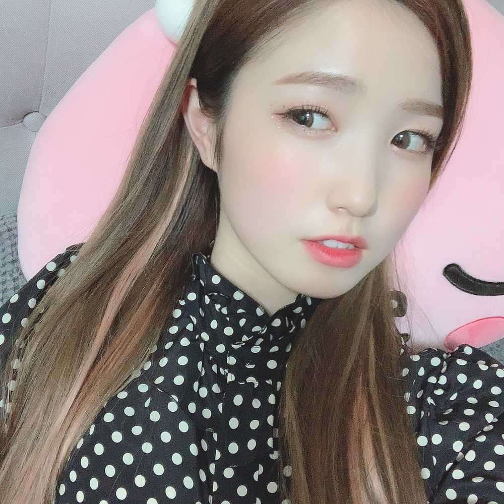
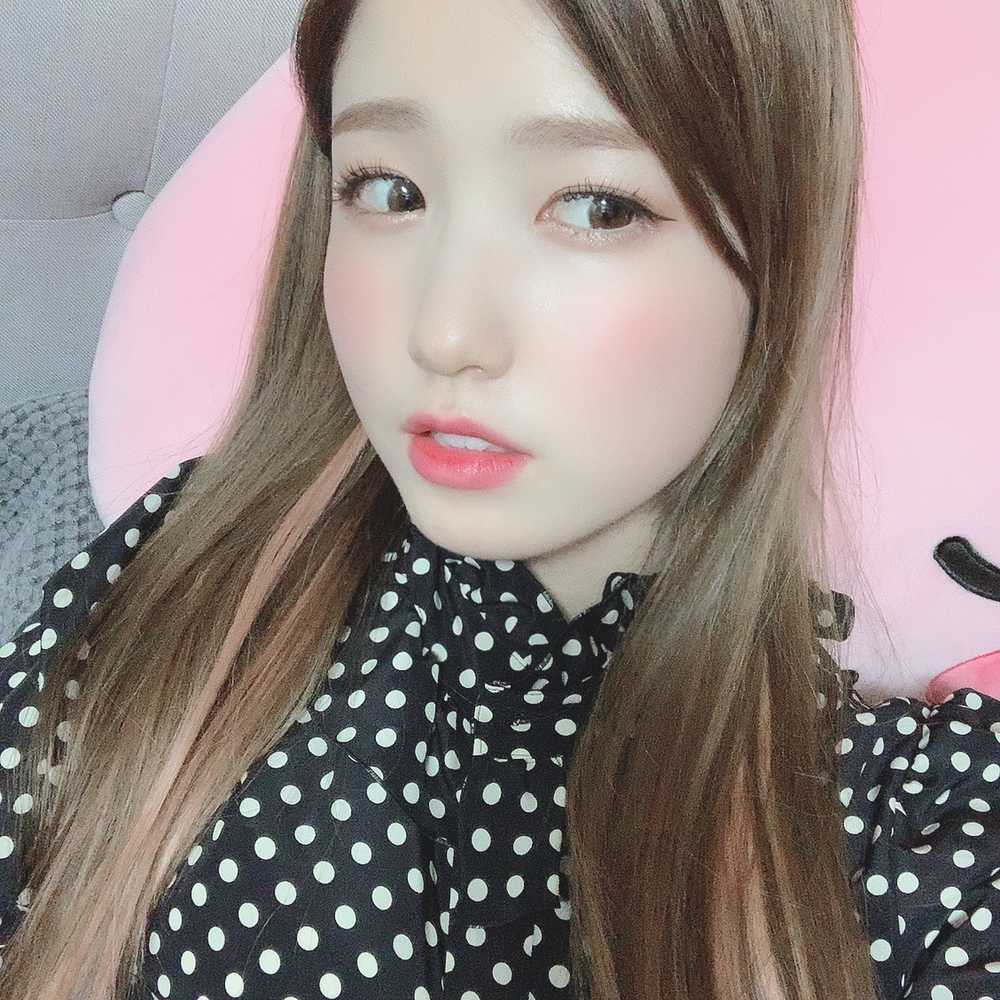

やっほーい
ひいだよ🍓

今回は
自分の顔事情についてお話するね🙂
이호は自分の顔の左右どちらが好きとか
ありますか？？
わたしは左の顔🖐🏻
だけど昨日ね！
右の顔をすごく褒めてもらえた！！
だから右側で撮ってみたけど。。。
やっぱり左が好きです🙃笑
どっちの顔も好きになれたら
撮影のときいろんな角度で撮れるから
いいのになぁって思う😭
たしかに右の方が左より
目の大きさは大きいけど
輪郭のせいでね😕
試しに右側で撮った写真載せてみる🤳
あと最近気づいたかもしれないけど
題名がほぼ絵文字っていうね😂
昨日は「早起き成功」って
久しぶりに文字にしてみたけど
あとはほぼほぼ絵文字👀
でも文字よりも絵文字の方が
通知で来た時に「どんな内容なのかな」って
気にならない？？笑
それに絵文字使うの好きだから
選ぶのも楽しいし🥰
いつも携帯のアップデート通知来るたびに
絵文字追加ないかなってチェックするもん💡笑
そろそろ新しいの追加されてほしい〜👐🏻
じゃあまたっ
부대찌개 먹을 사람???ㅎㅎㅎ
저는 아직 배고프지 않지만 슬슬 먹을까 생각중🤔
늦은 시간에 먹는게 좋아하지 않아서요ㅎㅎㅎ
뭐 먹을까~🙄🙄🙄
그리고 내일도 비 온다고요...?!!
오후에!!?
근데 저번에도 말 해놓고
결국 비 안 왔잖아요...???ㅎㅎㅎ
내일도 오지 않았으면 좋겠다😥
자!!! 이번엔 내가 질문 할게!!!
이호 의 가장 좋아하는 이모티콘이 뭐예요???
하나만!!! 알려줘~🥰
그리고 하나 더 물어보고 싶은데....
메일 쓸때 반말하고 존댓말
어느쪽이 좋을까요....???ㅎㅎㅎㅎ
그것도 알려주세요😳💦

右の顔〜
じゃあ1枚目の写真と見比べて
どっちがいいか教えて👐🏻
表情同じだから
ただ写真反転させたみたいだけど
違うからね！笑
それから
両方好きっていう意見はナシ😊笑
ばいばーい👋🏻
ひいまる🥟